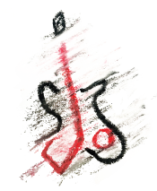
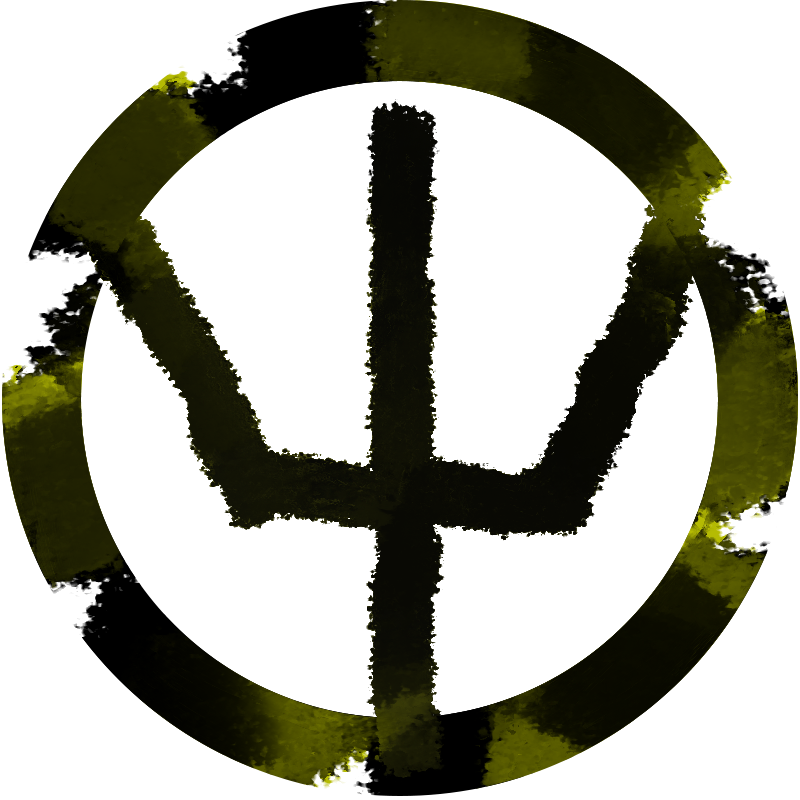
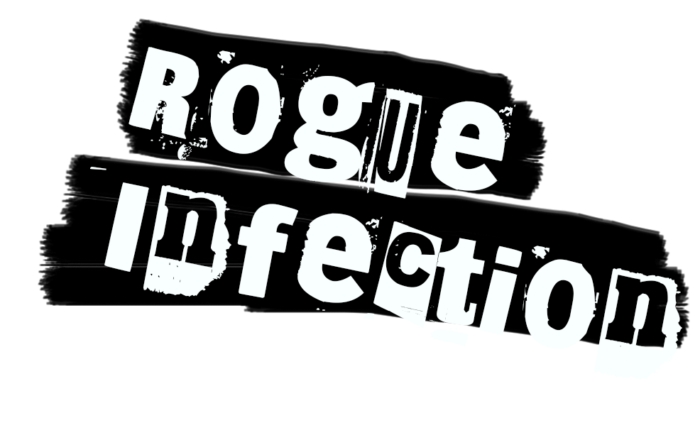

Jax Owen
Jax owen, is kind of a legend in the Britisch punk scene, the hero of the nineties when he crashed every punkparty with is his young energy. Jax turns 40 this year and is planning his comeback because he set his career on hold when he turned 30 to focus on his family. So after 10 years he is planning the biggest comeback in punk history. He singed a deal with a new record label where he will release 4 brand new albums. He decided to pick his career back up after his little girl died at the age of 15, she lost the fight against cancer. He wanted to bring a tribute to her in a way he could process it in his own way, off course this was punk music!
To he's shopTrident
 Trident is an ex corrupt police agent. He got arrested for robbing a bank. For this he did 15years of prison but naw that he's free he turned to music. he's music is all about how much he hates the police mix in a hard core punk style. He joined PBM 'Britse Punk Music' because he was starting to get popular and needed a helping hand of some professionals. Trident realy likes money en by joining BPM he kan make alot more. The Name Trident comes from he's eX-Police Title (Armed-Police).
To he's shopRogue Infection
 Rogue Infection Is an all girls band. They all want the same, play their own music. the members of the group are Ivy, Scarlet, Silver and Sky. They accidentally met while playing music in the streets of Camden Town. Because of the same taste in music and their matching personalities they created Rogue Infection. Their songs are mostly about what they like or don't like about modern society and about their own experiences.
To there shopThe Chiefs
Sid, Frank, Rocco and Reed are British punkers from London. They’ve known each other since they were adolescents fighting for anarchy in the UK. They still have a passion for raw, old skool punk music, so they decided to start a band, called 'The Chiefs'. Sid is the lead vocalist, Frank plays the guitar, Rocco the bass guitar and Reed the drums. Their sound is innovative, yet old school and that is what makes them so unique. Now that they've joining British Punk Music, their songs will hit the charts in no-time.
To there shop